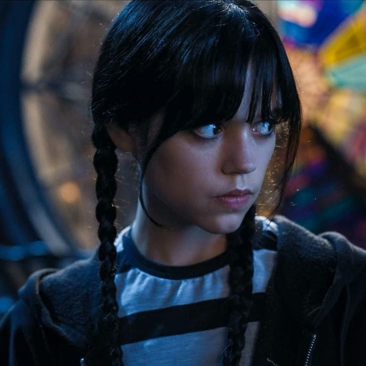
Wednesday Addams
Wednesday (2022-Presente)Inteligente, observadora e de humor sombrio, Wednesday investiga mistérios enquanto tenta compreender suas relações e emoções em Nevermore.
Um guia rápido dos personagens interpretados por Jenna Ortega e Emma Myers. (Nem todos aparecem nas histórias)

Inteligente, observadora e de humor sombrio, Wednesday investiga mistérios enquanto tenta compreender suas relações e emoções em Nevermore.
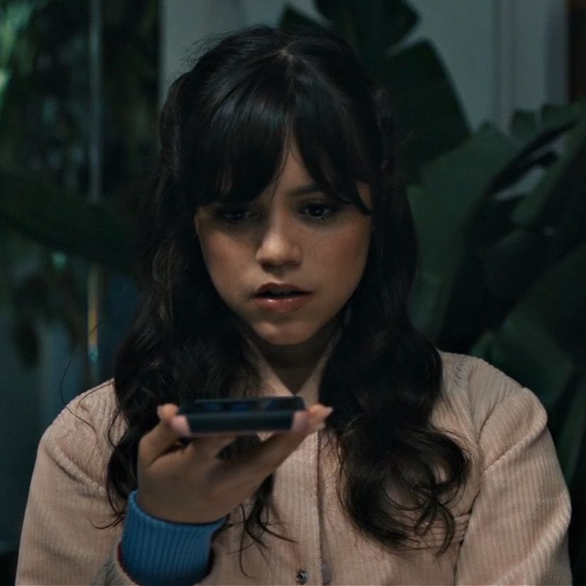
Uma sobrevivente determinada dos ataques de Ghostface, que tenta reconstruir sua vida enquanto enfrenta os traumas do passado.
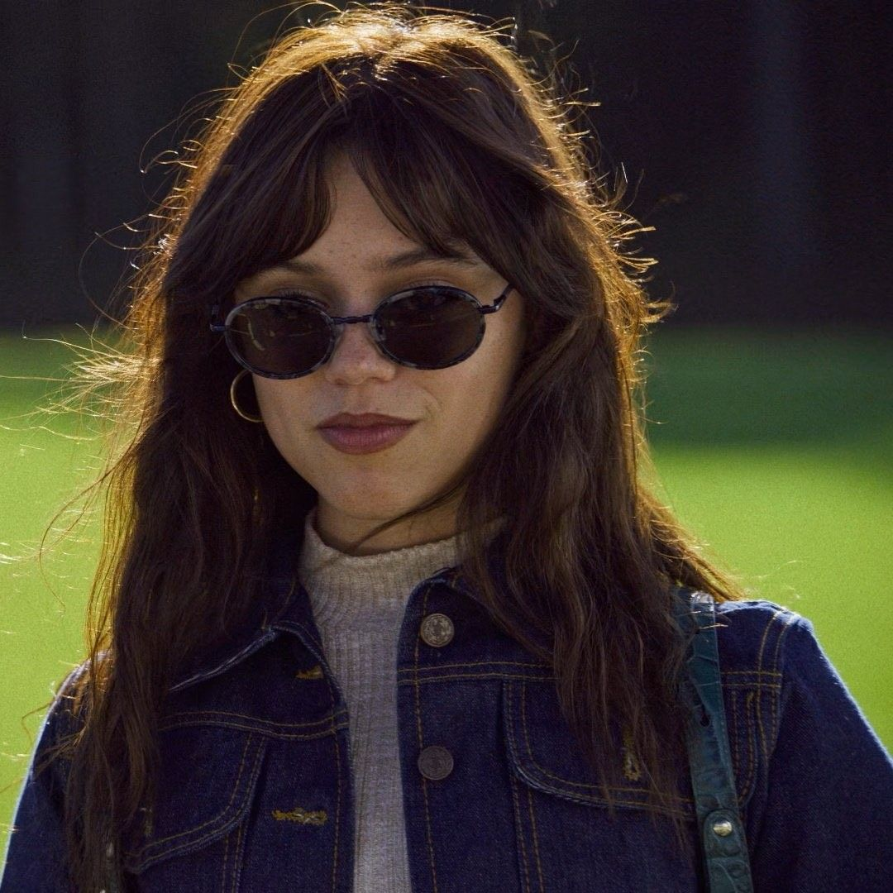
Uma estudante talentosa e ambiciosa, apaixonada por literatura e fascinada por relações que desafiam limites e convenções.
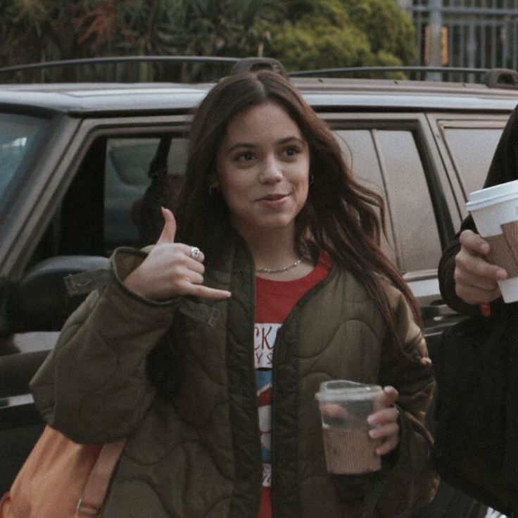
Após sobreviver a um tiroteio em sua escola, Vada enfrenta as consequências do trauma enquanto tenta encontrar seu lugar no mundo novamente.
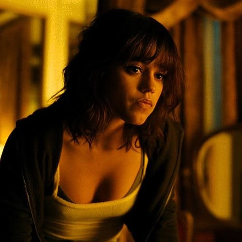
Uma fã obsessiva de Abel, cuja admiração pelo cantor se transforma em uma relação perturbadora marcada por controle e obsessão.

Assistente de uma galerista ambiciosa, Kiki está envolvida nos bastidores do competitivo mercado de arte, às vésperas de uma importante estreia na Art Basel. O que sabemos sobre ela até o momento é que estudou em um internato e sua mãe se chama "Marianne Gorman"
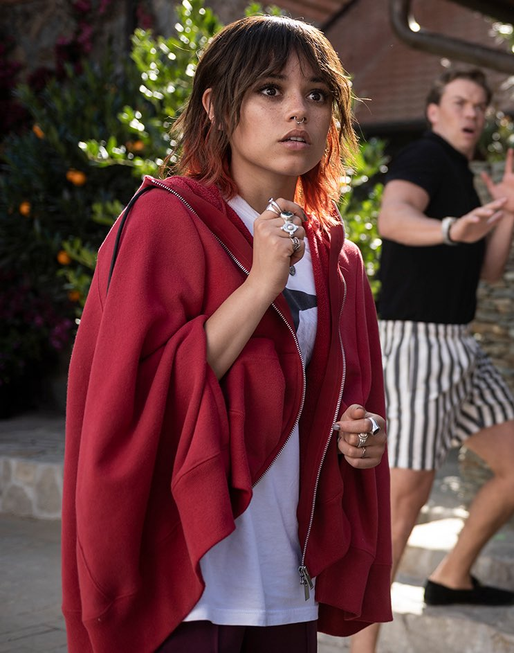
Filha de Elliot Kintner, Ridley é uma adolescente inteligente e questionadora que se envolve em uma descoberta extraordinária durante uma viagem com o pai: a existência de unicórnios.
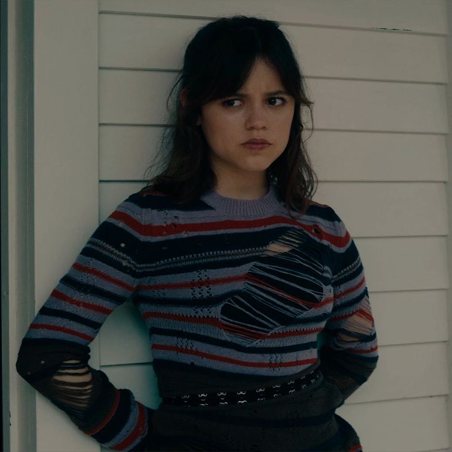
Filha de Lydia Deetz, Astrid é uma adolescente inteligente, sarcástica e questionadora, que acaba envolvida em acontecimentos sobrenaturais após retornar à casa da família em Winter River.
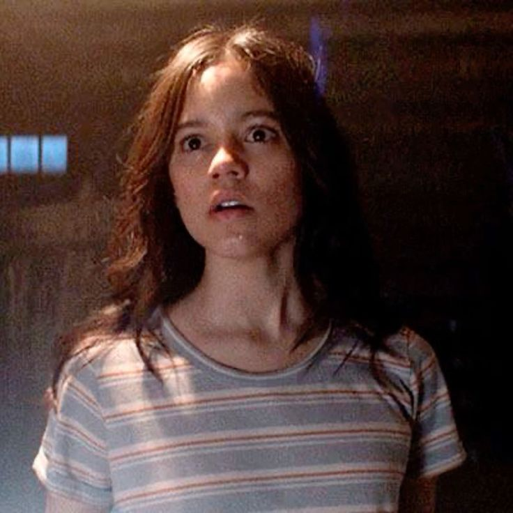
Namorada de RJ, Lorraine é uma jovem religiosa e reservada que decide participar da produção de um filme adulto, surpreendendo o grupo com sua determinação e vontade de explorar novos caminhos.
Uma estudante brilhante e ambiciosa que sonha em estudar Direito em Harvard. Ao conhecer Barnes, Remi começa a questionar os planos que traçou para o próprio futuro e a descobrir o que realmente deseja para sua vida.
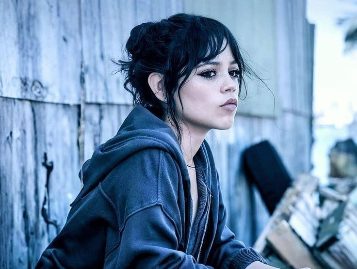
Uma jovem envolvida com o tráfico de drogas e filha de uma mulher ligada ao crime. Mabel conhece Charlie e se aproxima dele, envolvendo os dois irmãos em uma perigosa operação de contrabando. Apesar de sua realidade difícil, sonha em construir um futuro diferente e entrar na faculdade.
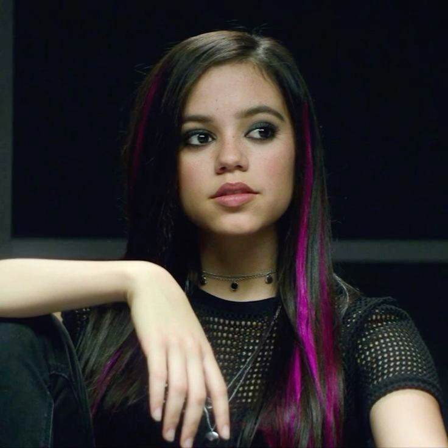
Uma jovem ativista, inteligente e contestadora, que acaba detida injustamente por causa de sua origem familiar. Ao ser enviada para um programa de trabalho comunitário, Camila descobre uma conspiração perturbadora e luta para escapar ao lado dos outros jovens.
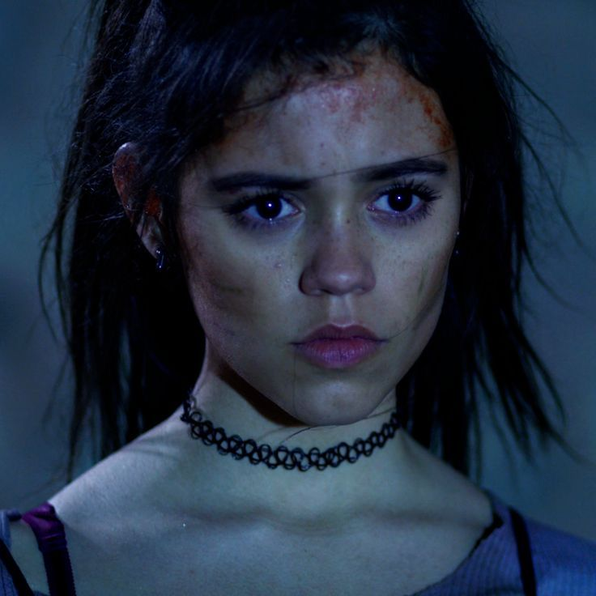
Uma adolescente misteriosa e independente que conhece Cole após uma série de acontecimentos sobrenaturais. Inteligente e corajosa, Phoebe esconde segredos sobre seu passado e acaba se tornando uma importante aliada na luta contra o culto satânico.
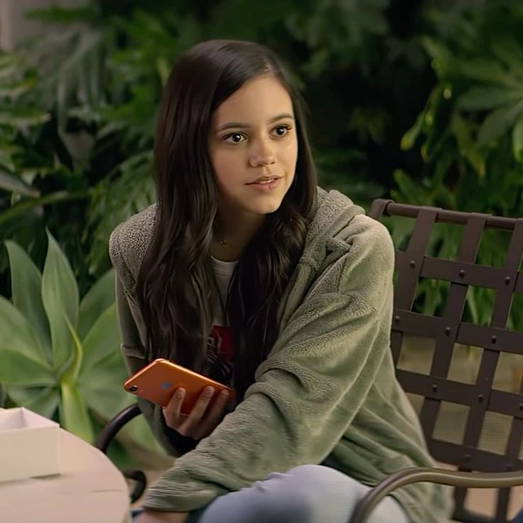
Uma adolescente independente, esperta e apaixonada por cinema, que vive com a irmã mais velha em Los Angeles. Apesar de sua maturidade, Ellie acaba envolvida nos segredos perigosos de Joe Goldberg.
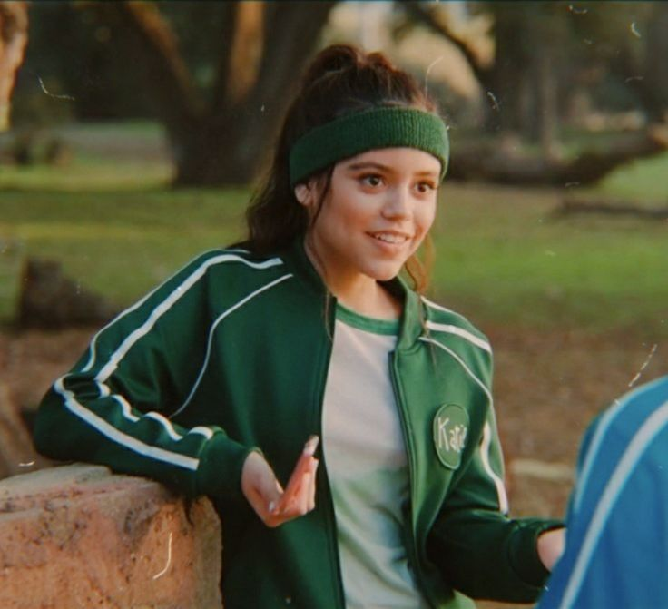
Filha mais velha de Allison e Carlos, Katie é uma adolescente independente e determinada que deseja ter mais liberdade e tomar suas próprias decisões. Cansada das regras da mãe, vê no Dia do Sim uma oportunidade de provar que já está crescendo.
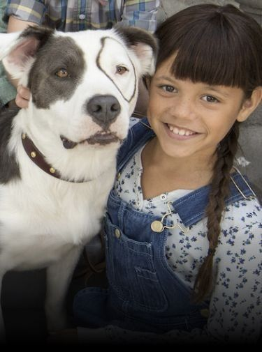
Uma das crianças da turma dos Batutinhas, Mary Ann é uma garota doce e determinada que se junta aos amigos em uma aventura para salvar o clube comunitário e impedir que ele seja fechado.
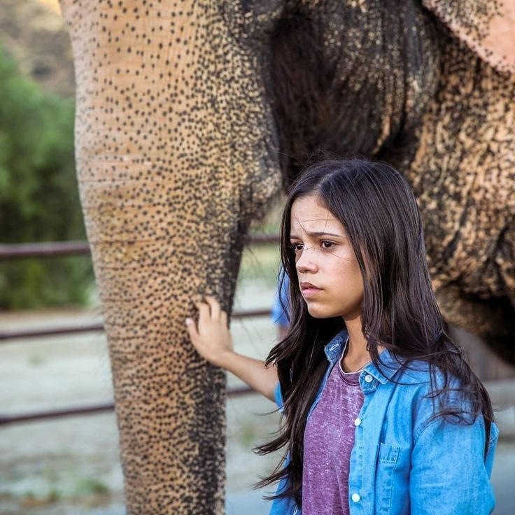
Filha de um dono de circo, Dawn é uma garota sensível e determinada que desenvolve uma forte amizade com Flora, uma elefanta ameaçada de ser sacrificada, e decide arriscar tudo para salvá-la.
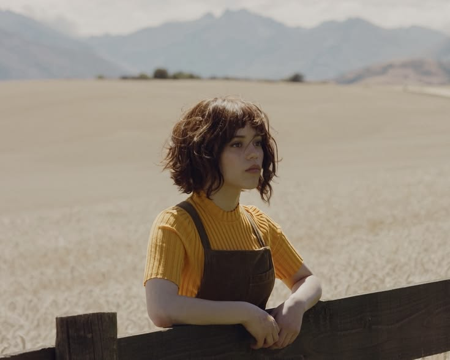
Uma Amiga Artificial dotada de grande capacidade de observação e curiosidade, Klara é escolhida para acompanhar Josie. Atenta aos sentimentos humanos, desenvolve uma compreensão singular sobre amor, esperança e sacrifício.
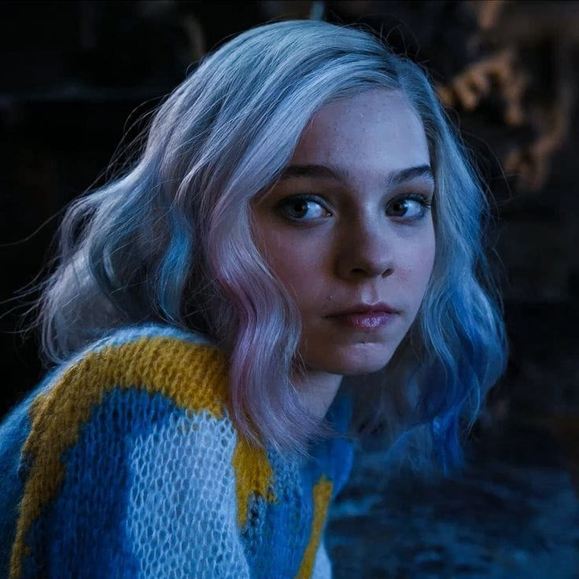
Extrovertida, otimista e apaixonada por cores, Enid é uma lobisomem e colega de quarto de Wednesday Addams na Academia Nunca Mais. Apesar das diferenças entre as duas, desenvolve uma amizade improvável com Wednesday enquanto enfrenta seus próprios desafios para descobrir quem é e aceitar sua natureza.
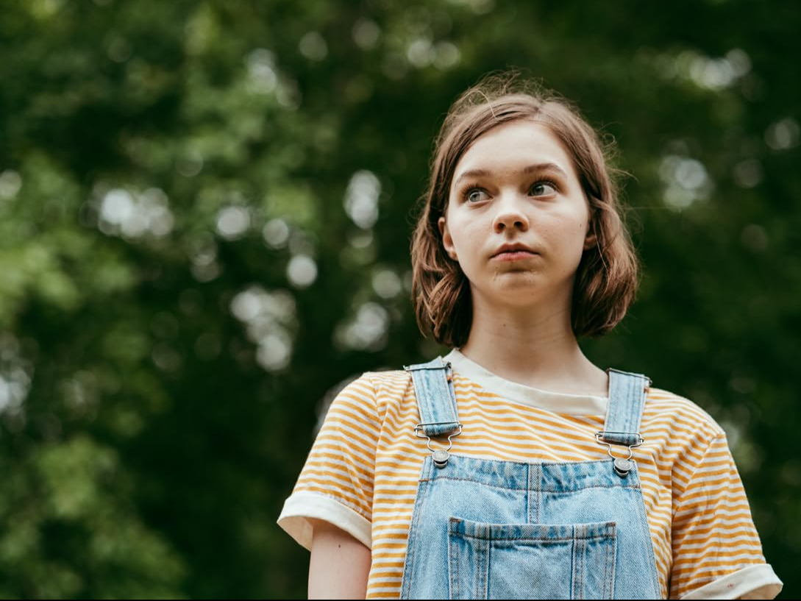
Personagem interpretada por Emma no curta-metragem Deathless, um dos projetos independentes de sua carreira antes de alcançar maior reconhecimento na televisão.
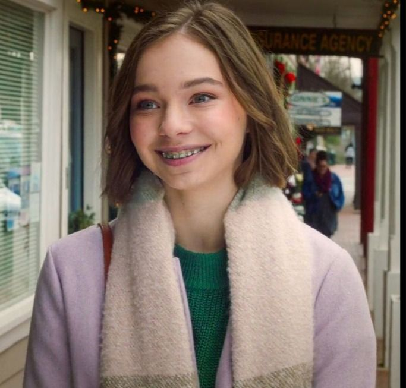
BeeBee é uma jovem que faz parte de uma história natalina sobre família, relacionamentos e o espírito das festas de fim de ano. O filme marca uma das primeiras participações de Emma em uma produção televisiva.
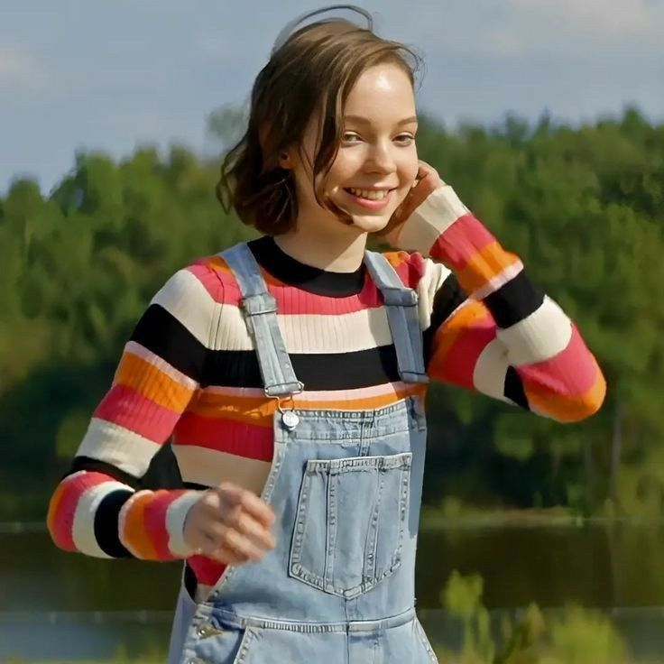
Marie é uma jovem cuja história é marcada por uma situação familiar extremamente difícil. O drama acompanha sua luta por liberdade e pela possibilidade de reconstruir a própria vida.
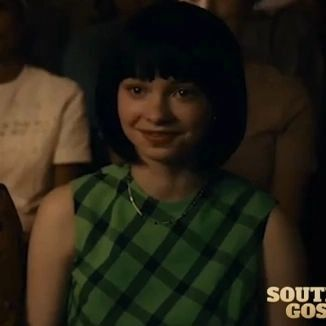
Angie faz parte do drama musical que acompanha a trajetória de um músico em busca de reconhecimento e de seu lugar no mundo. A história aborda fé, família e as escolhas que moldam uma carreira.
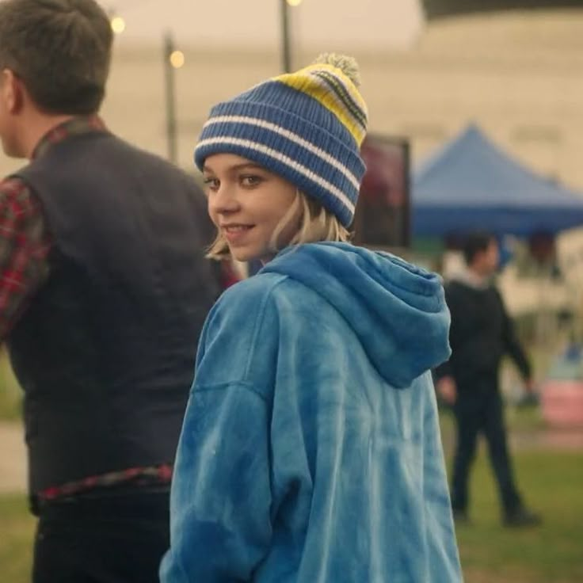
CC é uma adolescente ambiciosa e apaixonada por futebol que está prestes a viver uma grande mudança em sua vida. Depois de uma troca de corpos inesperada, ela precisa aprender a enxergar o mundo pela perspectiva de sua mãe.
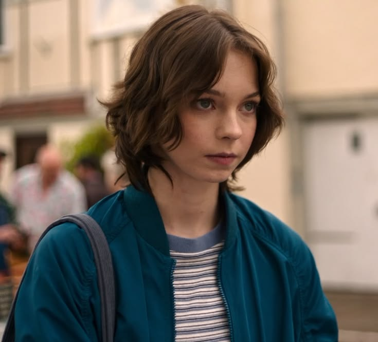
Inteligente, curiosa e determinada, Pip é uma estudante que decide investigar um caso de assassinato que todos acreditam estar solucionado. Conforme reúne pistas e questiona as versões oficiais, descobre que a verdade pode ser muito mais complicada do que imaginava.
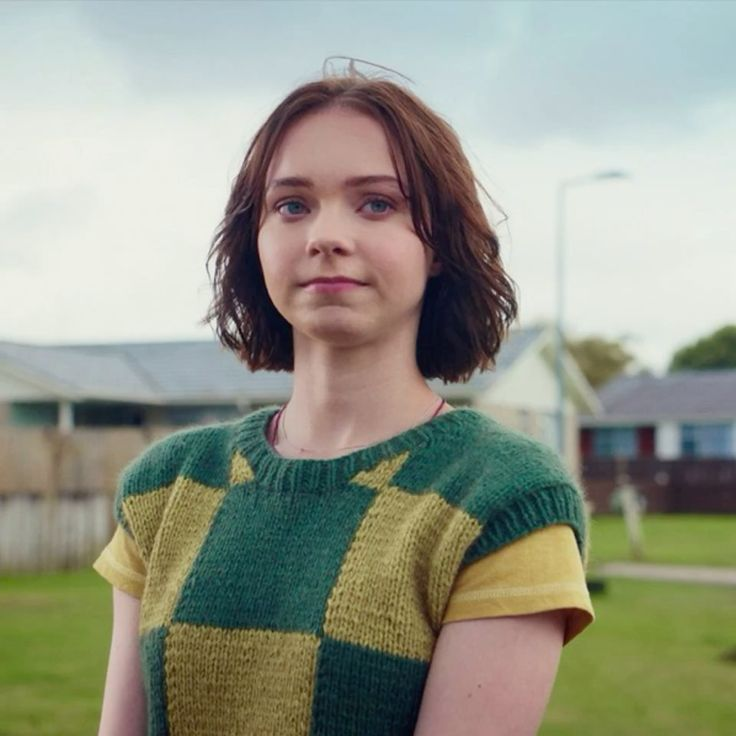
Natalie é uma das personagens transportadas para o Mundo Superior, um universo cúbico repleto de criaturas e desafios. Ao lado dos demais protagonistas, ela precisa encontrar uma maneira de sobreviver e voltar para casa.

Apelidada de "Sam", a personagem do anúncio da Galaxy S23 Ultra, que viaja entre universos paralelos, sempre se demonstrando curiosa e determinada, batalhando com diversos tipos de inimigos fisicamente.